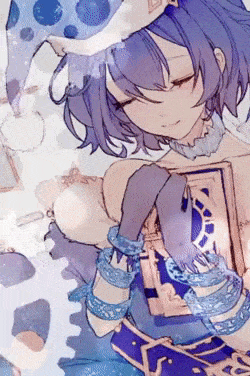
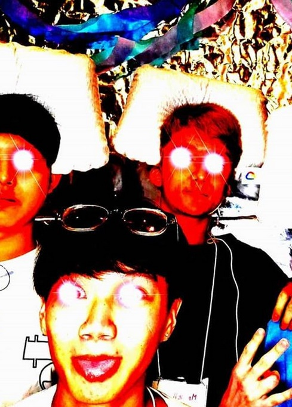
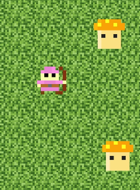

Hello! My name is Maxwell Bockmann, I'm currently a computer science undergraduate at Syracuse University pursuing a career as a software developer.
From a childhood interest to a growing passion, software development is where my heart is! When the time came for deciding on my future at college, I couldn't envision myself being in any other industry. I am currently a senior at Syracuse University with a concentration on full-stack development, and by getting a hands-on experience while working at the ITS Center on campus and providing software solutions on my own time, I'm eagerly learning more every step of the way.
I'm committed to my work, have a keen attention to detail, and am always finding new ways to improve what I do. With a knack for visual design and a strong understanding of software infrastructure, I'm ready to adapt to any problems you throw my way and be an asset for the solution.
If any of this sounds like a good match for your company or organization, please reach out, I respond very rapidly. I'm eager to kick-start my journey and get started in the tech world!
SKILLS
Technical Skills
Academic and personal knowledge of Java, Python, C#, Haskell, and HTML/CSS.
Academic and personal experience engaging with the agile development methodology as both a scrum master and team member, planning and doing task-level tracking for daily meetings both in-person and virtually.
Academic and personal experience using version control software like Git and Bitbucket.
Personal experience with C, C++, and Unity.
Completed courses related to data mining, web systems architecture & programming, access control, and cryptography.
Other Skills
Professional experience with task-management, client communication, and quality assurance.
Professional experience diagnosing issues related to Windows, MacOS, iOS and Android devices, including malware removal, OS installation, software installation, data backup & recovery, and hardware assistance.
Professional experience with performing CATV & ethernet testing and maintenance and repairing/replacing wireless access point and network switches.
Personal experience with video editing/recording software including OBS and Davinci Resolve, and Adobe editing software including InDesign, Illustrator, and Photoshop.
PROJECTS

Storyboards
I developed/modified scripts in C# to create animations that serve as background visuals for game levels.

Cusehacks Lazybot
Reddit bot using facial recognition Python scripts, demo on GitHub.
EHR4Kids
Website developed with a team to digitalize children's health records for a non-profit organization.
This!
This website was a fun side project, made from scratch with no WYSIWYG editors.
SolarPanel
A website to demo the orbits of planets in real-time and provide facts about our solar sytem.
Campus Rush
A trivia web-app to quiz your knowledge on assorted facts.

Mushroom Clapper
This is my first Unity game that's a continuous WIP. Demo on Github!
Among Us Bot
A discord.js bot to facilitate Among Us games.
CONTACT
Maxwell William Hans Bockmann ✦ Phone: 551-404-1452 ✦ E-mail: maxwellbockmann@gmail.com